Egito
Terra de mistérios e superstições, oferece uma viagem ao passado graças aos seus majestosos templos e maravilhas da antiguidade.
Considerado o berço das civilizações, o Egito fascina com sua rica história e grandes monumentos. Entre os inúmeros atrativos do país, há possibilidade de desfrutar de um cruzeiro pelo Nilo, contemplar as impressionantes pirâmides, degustar a culinária com suas especiarias e, mergulhar na imensidão do Mar Vermelho.
As Pirâmides de Gizé e a Esfinge são os dois pontos turísticos mais famosos. Elas fazem parte de um complexo chamado de Necrópole de Gizé, que inclui as três Pirâmides — Quéops, Quéfren, Miquerinos — e a Grande Esfinge. Ficam a cerca de 20 km do Cairo.
O Mercado de Khan El Khalili, é a maior feira popular do Cairo. Ao longo de suas ruas cruzadas, pode-se conhecer comércios e comprar produtos como tecidos, papiros, cristais, joias, roupas e lembranças. Também no Cairo, encontramos a Igreja Copta Cristã de Abu Serga (São Sérgio e São Baco), foi construída no século 11 sobre uma gruta onde, acreditam os egípcios, a Sagrada Família se abrigou em sua fuga ao Egito. Este local fica aberto para visitação.
Em Alexandria, cidade portuária do Mediterrâneo, no período helenístico, abrigou um farol que é considerado uma das Sete Maravilhas do Mundo Antigo, além de uma famosa biblioteca, reencarnada na ultramoderna Bibliotheca Alexandrina, em forma de disco. A cidade também tem marcos greco-romanos, cafés do velho mundo e praias arenosas.
Programe também uma visita as cidades como Luxor, Aswan e Sharm el Sheikh. Sendo assim, cada uma dessas cidades possui características particularmente especiais.
Antes de viajar para o país, faça um bom planejamento e busque o apoio de uma agência especializada.
Conte com a assessoria da Etto Trip e orientação de quem conhece este destino.
 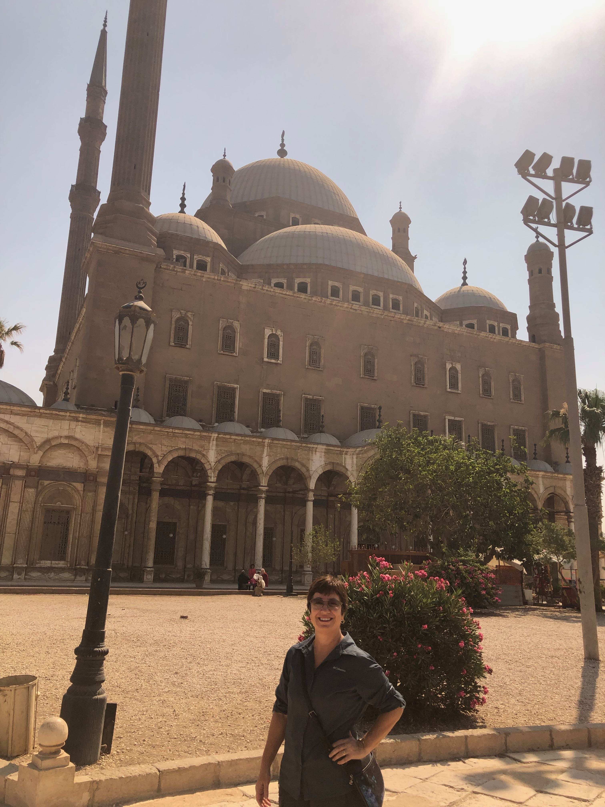
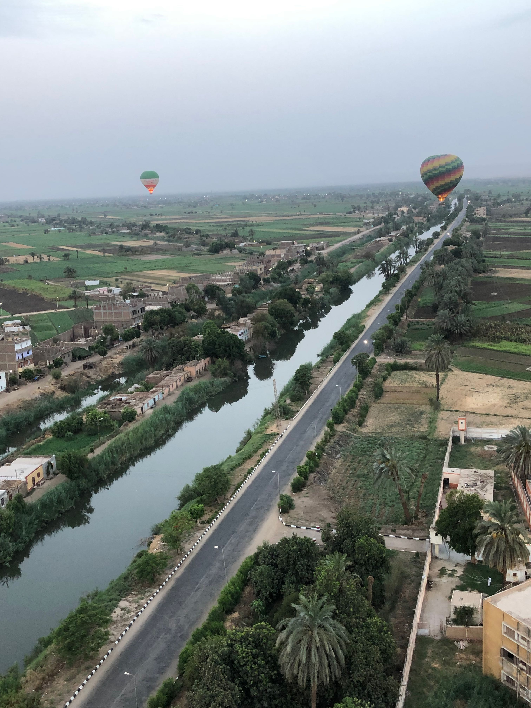
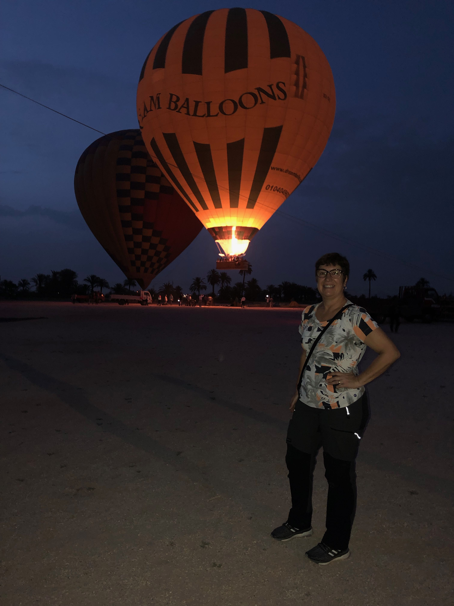
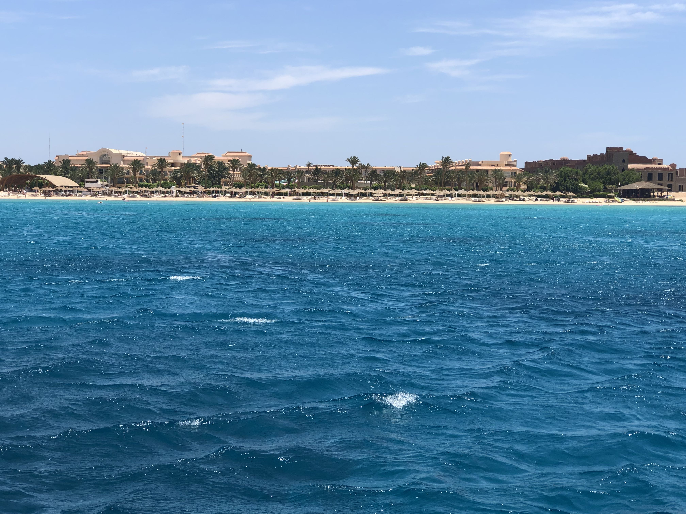
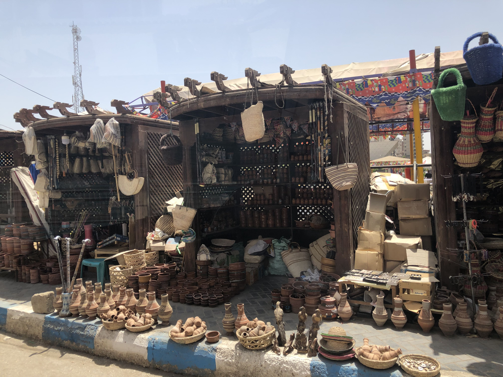
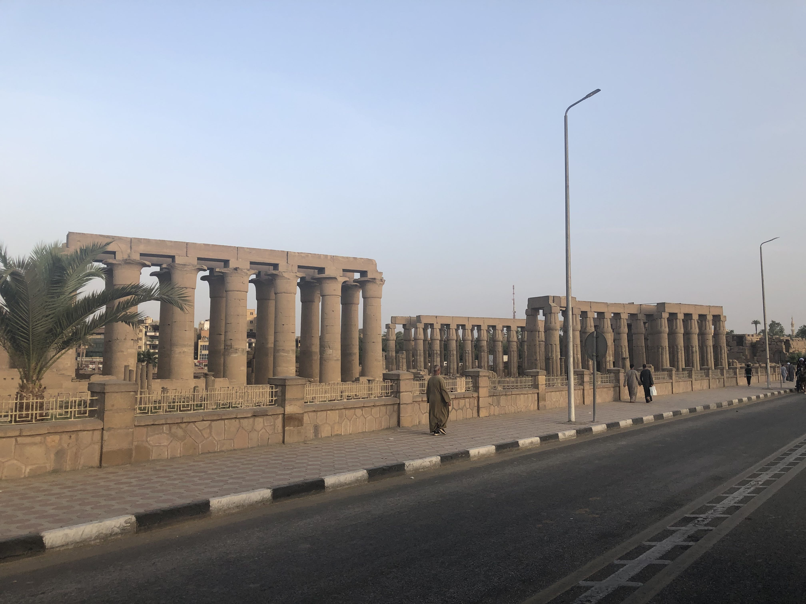
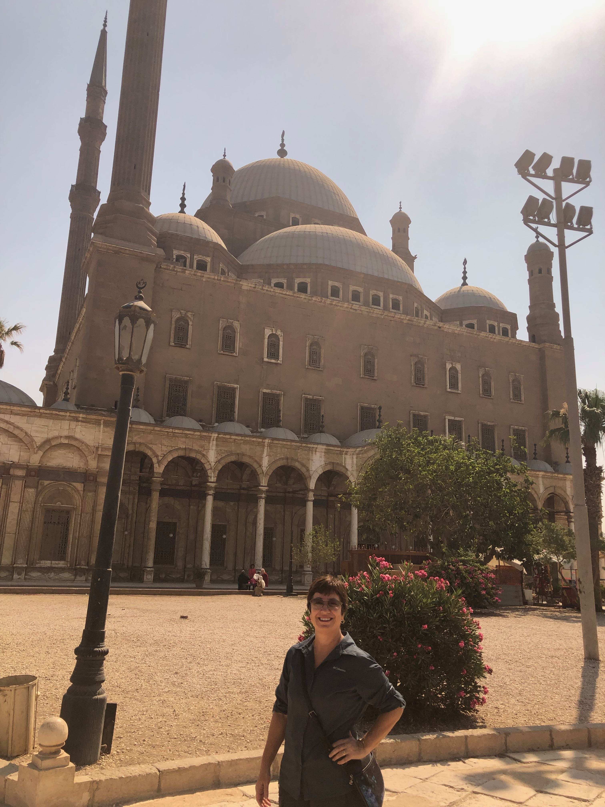
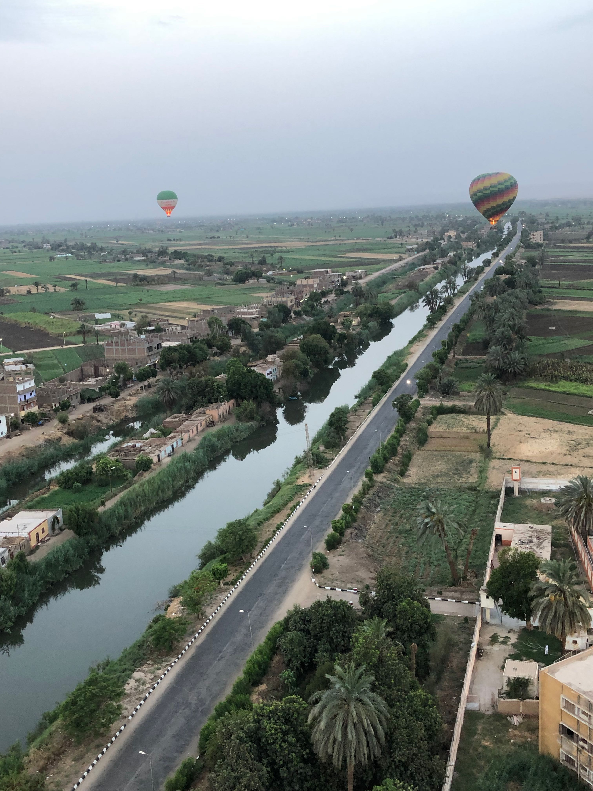
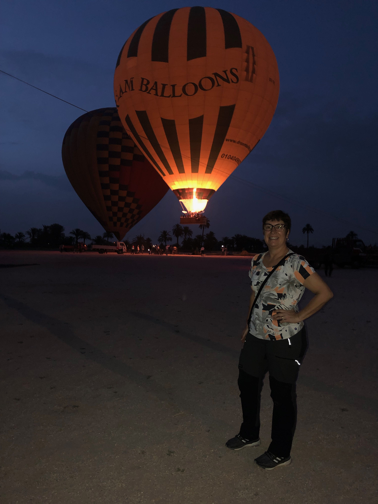
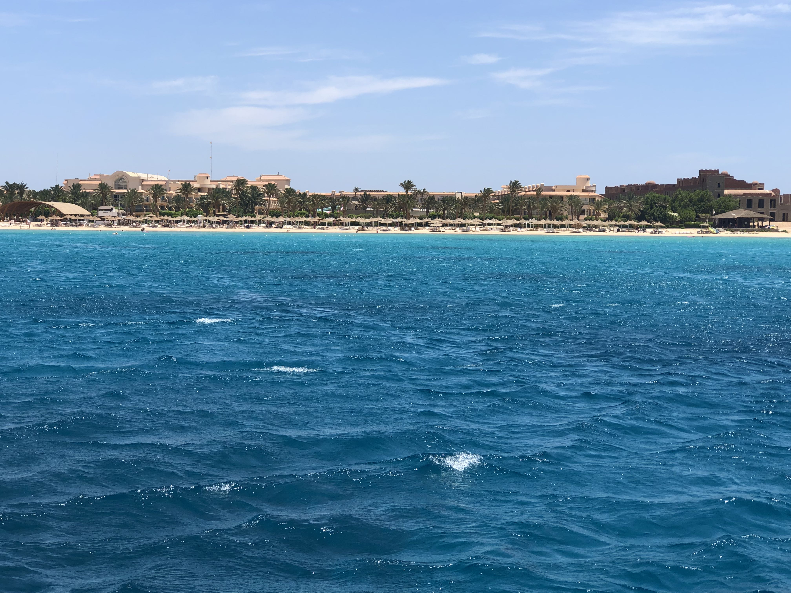
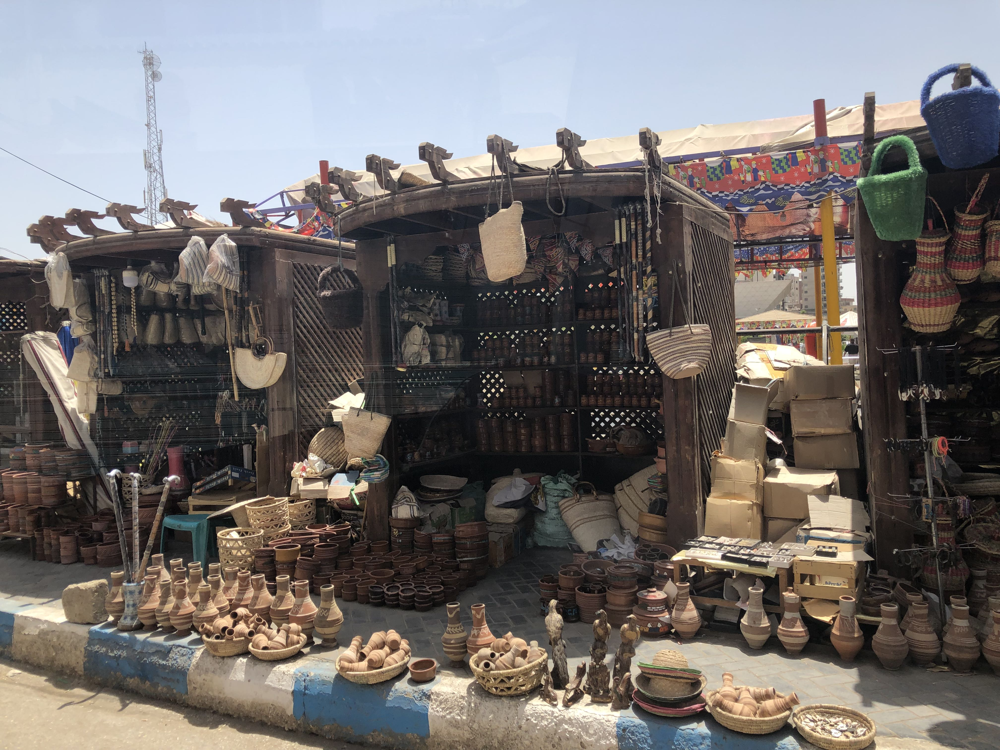
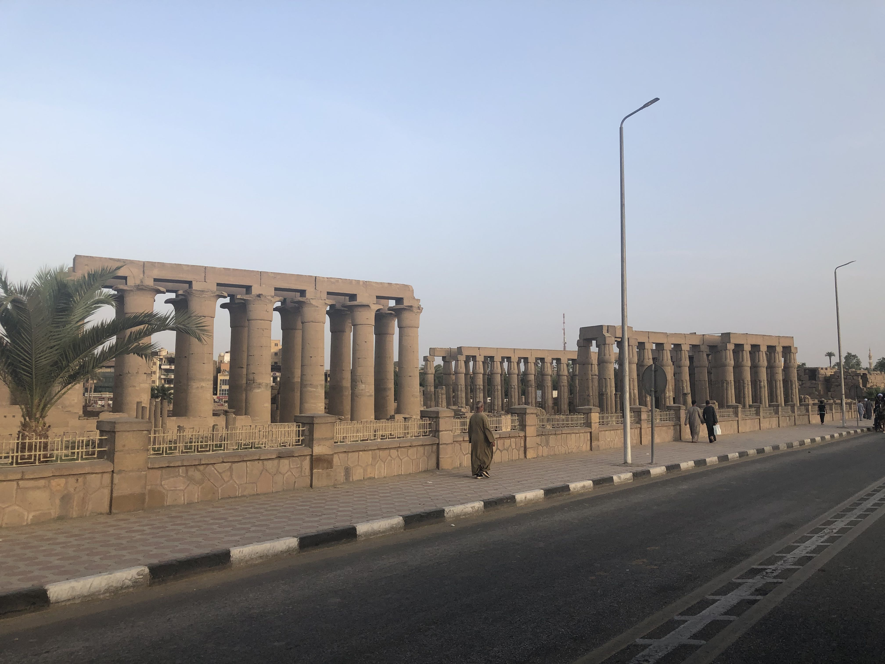